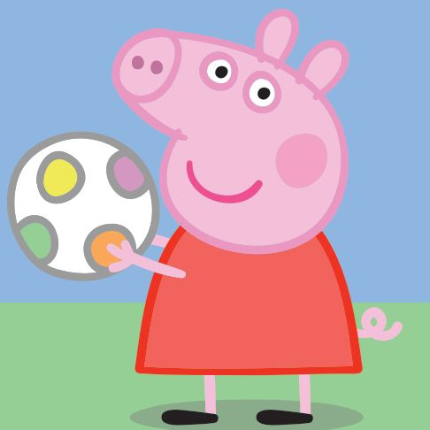

學習 • 開發 • 實踐
在線
台灣高雄 • 國立中山大學
碩士班 2026
張晴宇 Chang Ching-Yu
醫學科技所 • 生物資訊與計算
從醫學檢驗跨域走入計算生物學。具備次世代定序（NGS）生醫資訊專案實戰經驗，目前全力自學鍛鍊資訊工程底層基礎，致力將生物數據轉化為真正落地可用的分析工具與平台。
核心學術與技術方向
蛋白質結構預測、微生物分類鑑定平台、抗藥性基因分析、網頁式生物資訊分析工具開發。
核心專業與技能標籤
#NGSBioinformatics
#Python
#WebDevelopment
#DataAnalysis
#FastLearner
5+2
醫學檢驗背景歷練 (年)
2
實驗室核心研究方向
0→1
程式自學從零到一